Combinational Logic Functions and Expression
Logic Variables and Logic Functions
The circuits that process discrete or logic signals are called logic circuits or digital circuits
a logic variable => a binary variable => two possible values: '0' == FALSE; '1' == TRUE
A logic function specifies the functional dependence between its variables.
A truth table is the most natural way of describing a combinational logic function (There are many other ways.).
It is a table that lists all the combinations of input variables and a complete set of the function values corresponding to these input combinations.
The truth table of 16 possible 2-variable (and one-variable) logic functions
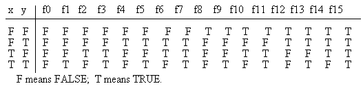
The truth table is the simplest and accurate method of defining a logic function.
If two functions have the same truth table, they must be identical.
To specify a combinational logic function using logic expressions or logic circuits requires decomposition and expression of a logic function in terms of predefined basic logic operations.
Primitive Combinational Functions and Basic Logic Operations
(Basic Logic Gates)
Truth tables for defining 16 primitive logical functions and basic logical operations
Input Output functions
A B F0 F1 F2 F3 F4 F5 F6 F7 F8 F9 F10 F11 F12 F13 F14 F15
0 0 0 0 0 0 0 0 0 0 1 1 1 1 1 1 1 1
0 1 0 0 0 0 1 1 1 1 0 0 0 0 1 1 1 1
1 0 0 0 1 1 0 0 1 1 0 0 1 1 0 0 1 1
1 1 0 1 0 1 0 1 0 1 0 1 0 1 0 1 0 1
Expression 0 AB 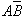 A 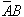 B 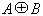 A+B 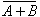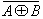 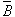 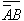 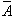 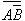 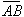 1
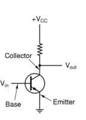 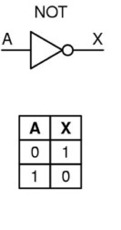
X= A' [function F12] or X = B' [function F10]
when Vin = 0 volt, Vout = Vcc (+5 volts) "open circuit"
when Vin = +5 volts, Vout = GND = 0 volt "close circuit"
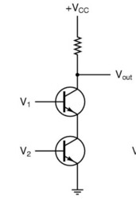 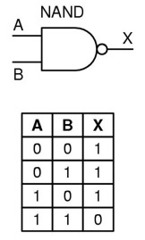
X = (AB)' [function F14]
when V1 = 0 V2 = 0, Vout = Vcc (+5 volts)
when V1 = 0 V2 = +5 , Vout = Vcc (+5 volts)
when V1 = +5 V2 = 0, Vout = Vcc (+5 volts)
when V1 = +5 V2 = +5, Vout = GND (0 volt)
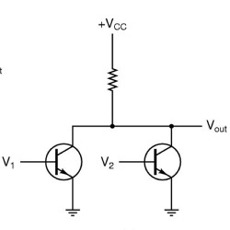 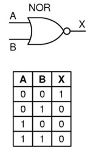
X = (A + B)' [function F8]when V1 = 0 V2 = 0, Vout = Vcc (+5 volts)
when V1 = 0 V2 = +5 , Vout = GND (0 volt)
when V1 = +5 V2 = 0, Vout = GND (0 volt)
when V1 = +5 V2 = +5, Vout = GND (0 volt)
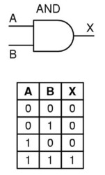
X = AB
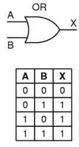
X = A + B
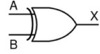
| A B | X |
| 0 0 | 0 |
| 0 1 | 1 |
| 1 0 | 1 |
| 1 1 | 0 |
X = A XOR B = A B = AB' + A'B
Boolean Algebra and Logic Expression
A logic expression (i.e., Boolean expression) is an algebraic expression composed of literals as independent variables and logic operators acting on these literals.
Introduced by George Boole in 1854
Useful identities of Boolean algebra:
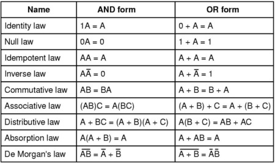
In particular,
principle of duality: any identity remains an identity if simultaneously all 0's are changed to 1's, 1's to 0's, ANDs to ORs, and ORs to ANDs. If identity is true, then its dual identify must be true.
DeMorgan's Theorem specifies the most important property of Boolean algebra.
(A + B)' = A' + B' and
(AB)' = A' + B'
Absorption rules:
A + AB = A and A(A+B) = A
e.g., A + A'B = A + B
Applications of Boolean Algebra -- Algebraic Manipulation
Proof of Equivalent Logic Expressions
example: (AB)' + CA' + B'C =?= (AB)'
Logic Expression Simplification
example: Find the minimal expression for
F(A,B,C, D) = AB'C' + AB'CD' + AB + AB'CD
Deriving Complement Functions
example: Find the complement function of
F(x,y,z) = x'yz' + x'y'z
SOP <=> POS conversion
A literal -- an instance of an original boolean variable or its complement
A product term -- one or more literals related by AND operations
A sum term -- one or more literals related by OR operations
A SOP (sum-of-product) expression -- one or more product terms related by OR operations
A POS (product-of-sum) expression --one or more sum terms related by AND operations
Example: Convert the SOP expression of an XOR to its equivalent POS expression
S = a'b + ab' (SOP)
S = (a'b + a)(a'b + b') [distributive law]
= (a'+a)(b+a)(a'+b')(b+b') [distributive law]
= (a+b)(a'+b') [inverse law]
(POS)
Canonical Logic Expressions (standard forms)
Goal: to assure the uniqueness of the algebraic representation of a logic function
Canonical (standard) SOP expression -- SOP expression in which all product terms are minterms.
Canonical (standard) POS expression -- POS expression in which all sum terms are maxterms.
Given the truth table of a logic function, we can directly write its canonical SOP and POS expressions.
Canonical logic expressions are the most complicated expressions.
Examples: Express the following logic functions in canonical SOP form and canonical POS form.
XOR function
XNOR function